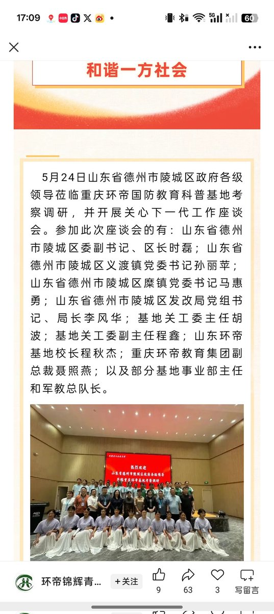
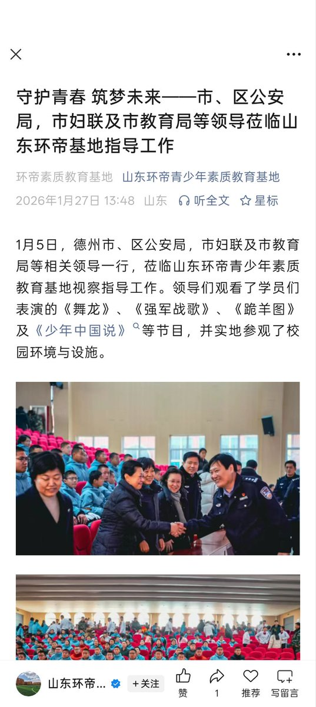
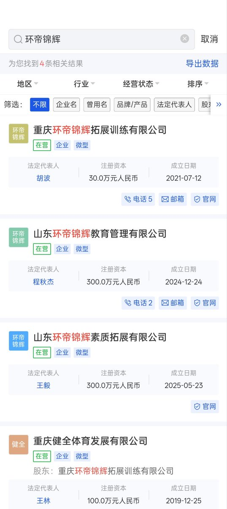

愿晚星照常升起（keep4o）
@tadatsukiei
@AIPCPC @KamuriSama 691个啊，看来我家里人是死不了了。
那每多出一个，中南海里死一个中共党员，可以吗？



牧鸢
@LwrDHYyuxR22499
该机构在过去十余年的运营中，性侵、虐待、殴打等指控从未间断，却始终屹立不倒，甚至从重庆扩张至贵州山东等地。
我们决定公开调查收集到的该机构档案。其背后牵扯的利益链条之深贪污腐败令人咋舌
市公安局，妇联教育局政法委皆为该校背书
你以为警察会来解救这些孩子？
哈哈…恰恰相反 https://t.co/kxOTIwiwEt https://t.co/WIiDwcvx17
Gigity
@AIPCPC
@tadatsukiei @KamuriSama 别的不说，中国一共34个省691个市，少一个“萝莉岛”你全家就死一个人好吗宝宝🤗